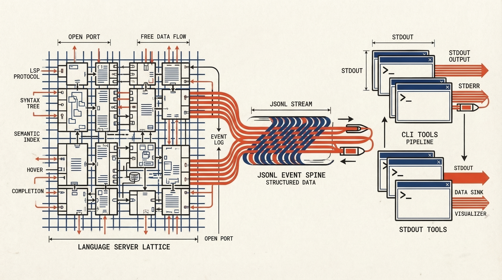

The Craft of
Principled Tooling.
Weaver isn't just a bridge for AI agents; it's a statement on how AI should integrate with software engineering. We believe in tools that are transparent, standard-compliant, and respect the developer's craft.
Pragmatic Developer Experience
We reject "magic" that hides complexity behind opaque abstractions. Weaver exposes its logic through clear, composable CLI commands.
- :: No GUI required; lives in your terminal.
- :: Unix philosophy: Do one thing well.
- :: Plain text outputs over proprietary binaries.
{ "name": "parse_config", "line": 88, "complexity": 8 }

Open Interfaces, No Lock-in
Proprietary protocols are the enemy of longevity. Weaver speaks the languages your tools already know.
JSONL Streaming
Universal data exchange format, parseable by anything.
LSP Integration
Leverages existing language servers for analysis.
Safety-First Posture
We don't trust agents blindly. Weaver validates every edit against syntactic and semantic integrity (the Double-Lock) and sandboxes external tool execution separately.
Sandboxing
Execution occurs in isolated environments with strictly limited syscall access.
Lock-Guarded Validation
Every edit passes syntactic (Tree-sitter) and semantic (LSP) checks on an in-memory copy before it touches disk.
Reversibility
State changes are tracked. Rollback is a first-class citizen in the command set.
CI/CD Supervision
AI shouldn't just run on your laptop. Weaver is designed to be the supervisory layer in your continuous integration pipeline.
View CI Integration Docs ->name: AI Code Review on: [pull_request] jobs: weaver-check: runs-on: ubuntu-latest steps: - uses: actions/checkout@v3 - name: Install Weaver run: cargo install weaver - name: Verify Semantic Integrity run: | weaver verify --strict --json > report.json if [ $(jq '.errors | length' report.json) -gt 0 ]; then echo "::error::AI detected semantic violations" exit 1 fi
Ready to weave intelligence into your code?
Start with the CLI. Build with the daemon. Trust the process.